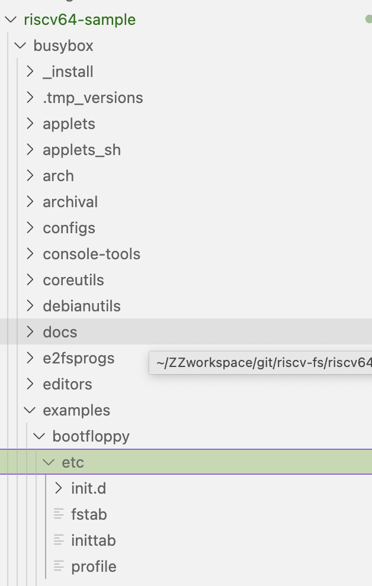
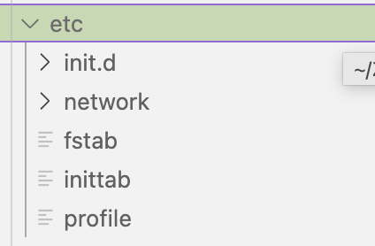
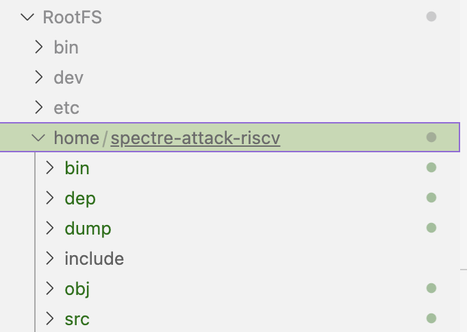
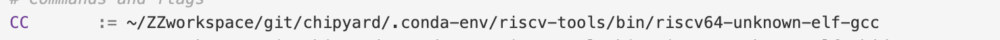
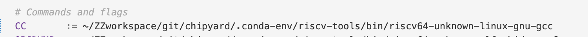
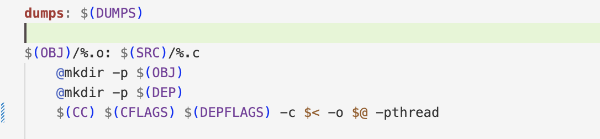

参考gem5官方文档
结合之前的教程，更正了有问题的步骤，补充了运行代码的步骤
riscv-fs/ |___ gem5/ # gem5 源代码 | |___ riscv-disk # 构建的磁盘镜像会放在这里 | |___ riscv-gnu-toolchain # 交叉编译的riscv工具链 | |___ riscv64-sample # UCanLinux 源码 | |__linux # linux 源码 | |__busybox # busybox 源码 | |__riscv-pk # riscv 代理内核源码(主要是利用里面的 bbl 构建 带bbl的linux) | |__RootFS # 磁盘镜像的根文件系统 | | | |___ README.md # 这个 README 文件# 安装依赖sudo apt-get install autoconf automake autotools-dev curl python3 libmpc-dev libmpfr-dev libgmp-dev gawk build-essential bison flex texinfo gperf libtool patchutils bc zlib1g-dev libexpat-dev
# 创建文件夹mkdir riscv-fscd riscv-fsgit clone https://gitee.com/mirrors/riscv-gnu-toolchain.git cd riscv-gnu-toolchain
# 删除qemu 下载太慢git rm --cached qemugit submodule update --init --recursive
# 编译工具链 # 将前缀改为你的目录./configure --prefix=$(RISCV)
# 编译make linux -j$(nproc)
# 更新环境变量 ~/.bashrcexport PATH=$PATH:$(RISCV)/bin/# 返回riscv-fs目录cd ../# 这里可以参考一下其他的博客，把原码下载下来，并配置依赖环境git clone https://gem5.googlesource.com/public/gem5
# 编译cd gem5#scons build/RISCV/gem5.opt -j$(nproc)#注意这一步，因为我要运行的spectreprime代码需要有多核共享缓存，要用到MESI缓存模型，所以这里编译时增加了一个属性，不然到后面运行全系统时会报错scons build/RISCV/gem5.opt --default=riscv PROTOCOL=MESI_Two_Level
# 回到riscv-fs目录cd ../git clone https://github.com/UCanLinux/riscv64-samplecd riscv64-sample/git clone --depth 1 --branch v5.10 https://git.kernel.org/pub/scm/linux/kernel/git/stable/linux.gitcd linuxcp ../kernel.config .configmake ARCH=riscv CROSS_COMPILE=riscv64-unknown-linux-gnu- menuconfig#会进入一个图形界面，直接退出并保存就行，一定要保存！make ARCH=riscv CROSS_COMPILE=riscv64-unknown-linux-gnu- all -j$(nproc)# 返回riscv64-sample 目录cd ../git clone https://github.com/riscv/riscv-pk.git
cd riscv-pk
mkdir buildcd build
sudo apt-get install device-tree-compiler
# 编译 ../configure --host=riscv64-unknown-linux-gnu --with-payload=../../linux/vmlinux --prefix=/opt/riscv/make -j$(nproc) chmod 755 bbl# optional: strip the bbl binaryriscv64-unknown-linux-gnu-strip bbl# 这将在riscv-pk/build目录中生成一个带有 linux 内核的引导加载程序二进制文件bbl# 返回 riscv64-sample 目录cd ../..git clone git://busybox.net/busybox.gitcd busyboxgit checkout 1_35_stable # checkout the latest stable branchmake menuconfig #同样会出来一个图形界面、直接退出保存即可，后面的也一样。make CROSS_COMPILE=riscv64-unknown-linux-gnu- all -j$(nproc)make CROSS_COMPILE=riscv64-unknown-linux-gnu- install# 返回 riscv64-sample 目录cd ../mkdir RootFScd RootFS
# 从 busbybox 复制 linux 工具/二进制文件（上面创建）cp -a ../busybox/_install/* .
# 从上面编译的 linux 内核安装模块cd ../linux/ make ARCH=riscv CROSS_COMPILE=riscv64-unknown-linux-gnu- INSTALL_MOD_PATH=../RootFS modules_install
＃从上面内置的工具链安装库cd ../RootFScp -a /opt/riscv/sysroot/lib .
# 创建空目录mkdir dev home mnt proc sys tmp va etc
cd etcmkdir networkcd networkmkdir if-down.d if-post-down.d if-pre-up.d if-up.d
这样做在后面运行全系统的时候会报错，而且启动系统的时候会卡在这里 can't run '/etc/init.d/rcS': No such file or directory
查看RootFS中的etc中确实没有该文件，该文件跟busybox的启动有关, 复制../busybox/examples/bootfloppy/etc/*中的文件到../RootFS/etc/ 中

复制完后RootFS etc文件夹如下

其中inittab内容如下
::sysinit:/sbin/init::respawn:-/bin/shtty2::askfirst:-/bin/sh::ctrlaltdel:/bin/umount -a -r
# 为 riscv 构建 m5 util 并将其移动到根文件系统 #cd ../../../../cd gem5/util/m5scons build/riscv/out/m5# 注意：默认的交叉编译器是riscv64-unknown-linux-gnu-. 可以使用 scons加riscv.CROSS_COMPILE更改交叉编译器，例如：# scons riscv.CROSS_COMPILE=riscv64-linux-gnu- build/riscv/out/m5cp build/riscv/out/m5 ../../../riscv64-sample/RootFS/sbin/
RootFS作为要制作的磁盘映像的根文件系统，我这里把要运行的攻击代码放在了RootFS中的home文件夹中，

还有一点要注意的是，因为我的代码用到了操作系统相关的函数，因此攻击代码中的makefile，编译代码的riscv工具链从

变成了

区别就是上面的是裸核编译，下面是带操作系统的编译
且为了支持多线程增加了-pthread

# 创建512MB磁盘cd ../../ #到riscv64-sample的文件夹里dd if=/dev/zero of=riscv_test1 bs=1M count=512
# 在磁盘上制作并挂载根文件系统mkfs.ext2 -L riscv-rootfs riscv_test1
sudo mkdir /mnt/rootfssudo mount riscv_test1 /mnt/rootfs
sudo cp -a RootFS/* /mnt/rootfs
sudo chown -R -h root:root /mnt/rootfs/df /mnt/rootfssudo umount /mnt/rootfs
这一步很关键，每次代码重新修改了或者编译，都要重新挂载一次，所以我编写了一个脚本
sudo mount riscv_test1 /mnt/test1 && echo "1"
sudo cp -a RootFS/* /mnt/test1 && echo "2"sudo chown -R -h root:root /mnt/test1/ && echo "3"df /mnt/test1 && echo "4"sudo umount /mnt/test1 && echo "5"这样每次攻击代码有修改或者其他变动，执行脚本就可以
在这里我用的 riscv 完整系统并运行模拟的 gem5 脚本在 configs/example/gem5_library/中。
xxxxxxxxxx sudo ./build/RISCV/gem5.opt configs/example/gem5_library/riscv-fs.py 更改过后的脚本如下：
xxxxxxxxxxfrom gem5.components.boards.riscv_board import RiscvBoardfrom gem5.components.memory import SingleChannelDDR3_1600from gem5.components.processors.simple_processor import SimpleProcessorfrom gem5.components.cachehierarchies.ruby.\ mesi_two_level_cache_hierarchy import ( MESITwoLevelCacheHierarchy, )# from gem5.components.cachehierarchies.classic.\# private_l1_private_l2_cache_hierarchy import (# PrivateL1PrivateL2CacheHierarchy,# )from gem5.components.processors.cpu_types import CPUTypesfrom gem5.isas import ISAfrom gem5.utils.requires import requiresfrom gem5.resources.resource import Resourcefrom gem5.simulate.simulator import Simulatorfrom gem5.coherence_protocol import CoherenceProtocolfrom gem5.resources.resource import CustomDiskImageResource# Run a check to ensure the right version of gem5 is being used.requires(isa_required=ISA.RISCV, coherence_protocol_required=CoherenceProtocol.MESI_TWO_LEVEL, kvm_required=True,)
# Setup the cache hierarchy.# For classic, PrivateL1PrivateL2 and NoCache have been tested.# For Ruby, MESI_Two_Level and MI_example have been tested.# cache_hierarchy = PrivateL1PrivateL2CacheHierarchy(# l1d_size="32KiB", l1i_size="32KiB", l2_size="512KiB"# )
cache_hierarchy = MESITwoLevelCacheHierarchy( l1d_size="32KiB", l1d_assoc=8, l1i_size="32KiB", l1i_assoc=8, l2_size="256kB", l2_assoc=16, num_l2_banks=1,)
# Setup the system memory.memory = SingleChannelDDR3_1600()
# Setup a single core Processor.processor = SimpleProcessor(cpu_type=CPUTypes.TIMING, num_cores=2)
# Setup the board.board = RiscvBoard( clk_freq="1GHz", processor=processor, memory=memory, cache_hierarchy=cache_hierarchy,)
# Set the Full System workload. 注意disk_image的路径是之前制作的磁盘的位置board.set_kernel_disk_workload( kernel=Resource("riscv-bootloader-vmlinux-5.10"), disk_image=CustomDiskImageResource("../riscv64-sample/riscv_test1"),)
simulator = Simulator(board=board)print("Beginning simulation!")# Note: This simulation will never stop. You can access the terminal upon boot# using m5term (`./util/term`): `./m5term localhost <port>`. Note the `<port>`# value is obtained from the gem5 terminal stdout. Look out for# "system.platform.terminal: Listening for connections on port <port>".simulator.run()与模拟系统的控制台交互：
telnet localhost 3456另一种选择是使用gem5提供的m5term:
cd gem5/util/termmake # compiling./m5term localhost <port> # launching the terminal# ./m5term localhost 3456进入到系统中，直接到home文件夹中运行之前编译好的riscv可执行文件即可。因为cpu type是时序模型，系统启动要很久，原子模型不支持多核。
./util/o3-pipeview.py -c 500 -o pipeview.out --color m5out/trace.outless -r pipeview.out为了方便攻击，在根目录gem5/下写了攻击脚本Makefile
GEM5_SIMULATOR = ./build/RISCV/gem5.opt
BOOMFLAGS += --debug-flags=Branch \ --debug-file=trace.out \ configs/example/se.py \ --cpu-type=DerivO3CPU \ --bp-type=BiModeBP \ --caches \ --l2cache \ --cacheline=64 \ --num-l2cache=1 \ --l1i_size=64kB \ --l1i_assoc=4 \ --l1d_size=16kB \ --l1d_assoc=4 \ --l2_size=256kB \ --l2_assoc=4 \ --mem-size=8192MB
BIN = --cmd=./attack_src/spectre-attack-pk/bin/dcacheTest.riscv
# default dcacheTestrun: $(GEM5_SIMULATOR) $(BOOMFLAGS) $(BIN)
# run spectre-v1s1: $(GEM5_SIMULATOR) $(BOOMFLAGS) --cmd=./attack_src/spectre-attack-pk/bin/spectre-v1.riscv
# run spectre-v2s2: $(GEM5_SIMULATOR) $(BOOMFLAGS) --cmd=./attack_src/spectre-attack-pk/bin/spectre-v2.riscv
s5: $(GEM5_SIMULATOR) $(BOOMFLAGS) --cmd=./attack_src/spectre-attack-pk/bin/spectre-RSB.riscv
# build pipeview filepipeview: ./util/o3-pipeview.py -c 500 -o pipeview.out --color m5out/trace.out less -r pipeview.out
# build gem5.optbuild: scons build/RISCV/gem5.opt
具体地：
make build # 构建 ISA指令集 仿真文件make s1 # SE模式运行 v1 攻击代码make s2 # SE模式运行 v2 攻击代码make s5 # SE模式运行 v5 攻击代码make # SE模式运行 dcacheTestmake pipeview # O3流水线可视化文件（没什么用）攻击代码上传到chat（代码有修改，另外要看一下makefile编译器路径）